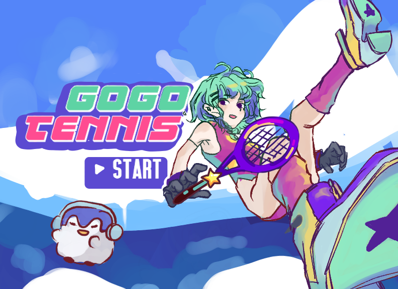

OVERVIEW
GOGO TENNIS is a fitness app that promotes active living through a multiplayer tennis game, accessible from home using existing devices. It requires one computer as a local network host and two smartphones as player clients, with Unity Netcode facilitating multiplayer communication. Real-time racket swings are tracked using phone gyroscopes for precise user control.
MY ROLE
Development
I was heavily involved in our multiplayer architecture(networking code), utilizing Unity Netcode, the official multiplayer library, to establish our multiplayer system. This library provides essential functions like clientrpc and serverrpc, streamlining communication between clients and the server, ensuring seamless data synchronization across devices. Additionally, I created a player lobby allowing clients to connect by entering the correct IP address. Our network code involved designating the tennis ball, players, and score as networked objects, granting them authority when it was each player's turn to interact with the ball. This facilitated the synchronization of crucial game data, including player positions, ball movement, and scores, across all connected clients and the server. Furthermore, I handled networked events such as serving, hitting, and scoring, ensuring a cohesive and engaging multiplayer tennis experience.
Testing and Debugging
In terms of testing and debugging, I employed a range of tools, including the Unity editor and Unity remote, while also creating builds through Xcode for deployment on mobile devices. My rigorous testing encompassed various scenarios such as boundary checks, double bouncing, and point scoring to validate the functionality and alignment with real tennis gameplay. Following the successful validation of our single-player mode, which featured an AI opponent, I shifted our focus to multiplayer testing. To ensure seamless synchronization across clients, I ran our game on multiple devices, conducting thorough assessments on both Android and iOS platforms. Debug statements played a important role in facilitating unit and integration testing within Unity and Xcode, enabling me to scrutinize our code for issues and swiftly implement resolutions.
Project Management
I was the project leader in our team, and I oversaw key responsibilities such as deadlines and milestones, coordinated team meetings, allocating tasks, and ensured product delivery for deadlines.
3D Modeling/Creative Direction
I actively contributed to refining the finalized theme and UI/UX design through multiple iterative processes. Additionally, I took charge of scene design, and 3D modeling all in-scene objects and one core character. I also used Mixamo to craft animations for all playable characters.
Previous title screen iteration
DEVELOPMENT STACK
For this project we used Unity/C#, built in Android and iOS sensors, Unity Netcode Library for multiplayer, and Blender.
DETAILS
In our game, players compete in the best-of-three rounds format, with points scored when opponents miss the ball or hit it out of bounds, mirroring real tennis scoring. We've introduced game states like deuce and match point to elevate the excitement. To differentiate ourselves from similar games like Wii Sports, we prioritize realism, featuring accurate physics simulations, player-controlled racket orientation, and variable hit strengths based on swing speed. Notably, we've rectified issues where the ball would pass through the racket in Wii Sports by precisely calculating the angle and speed of ball deflection upon impact.
Moreover, we've incorporated engaging animations between rounds, signaling score resets and showcasing winning and losing emotes for each player. To enhance ball visibility on computer screens, we've added a ground imprint, displaying a red circle at its last location upon impact. Additionally, a trail renderer ensures the ball's airborne position remains clear. Players serving receive an indicated server tag, and an "out" tag appears when the ball is out. After every play, the winning player enjoys a sparkling animation, while the losing player displays a bewildered star animation. At the game's conclusion on all devices, the winning player celebrates with a "victory screen," granting users the option to choose a rematch or exit the game via computer.
Project Overview Video